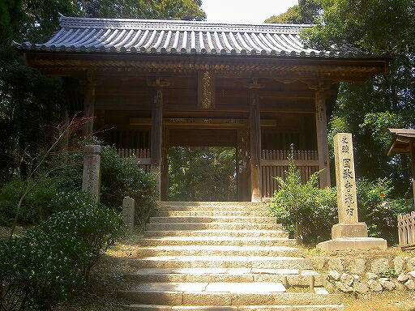

|
The Vietnamese German University
Department of English
Foundation Year
English for Information Technology
IZUMI SHIKIBU
(?976-?)
SHŪISHŪ XX: 1342

Composed and sent to the Monk Shoku (ca. 917-1007). [1]
a) Kanji:
暗より
暗道にぞ
入ぬべき
遙に照せ
山の葉の月 |
b) Romanji:
Kurasa yori
kuraki miti ni zo
irinubeki
Faruka ni terase
yama no ha no tsuki |
c) English:
From darkness
On a shadowed path
I must make my way;
Let it faintly shine,
The moon upon the mountain’s edge.
[2] |
|